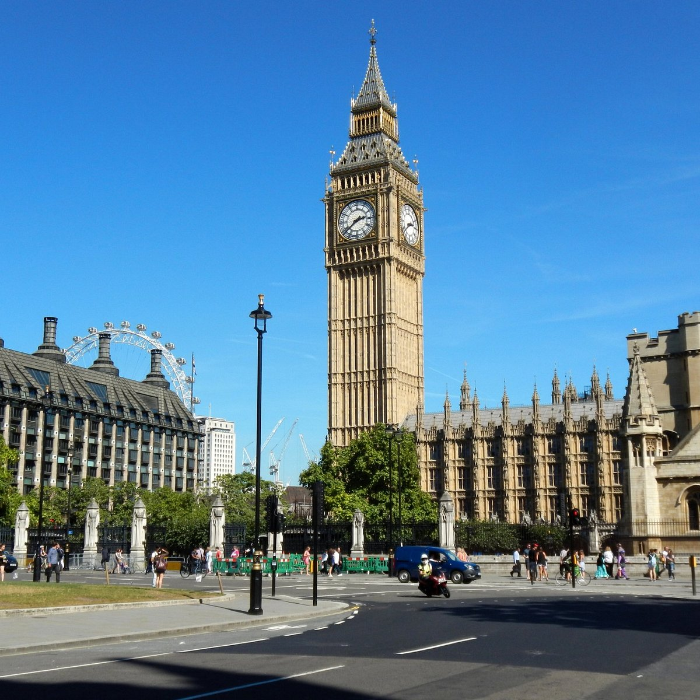

Sites
- Big Ben: 
- Tower Bridge:

La Grande-Bretagne (en anglais : Great Britain ou plus rarement Britain, en gallois : Prydain Fawr, en scots : Great Breetain, en cornique : Breten Veur, en gaélique écossais : Breatainn Mhòr, en breton : Breizh-Veur) est une île au large du littoral nord-ouest de l'Europe continentale. Elle représente la majorité du territoire du Royaume-Uni. En son acception politique, ce toponyme désigne l'Angleterre, le pays de Galles et l'Écosse ainsi que la plupart des territoires insulaires contigus à l'exclusion de l'Île de Man et des Îles Anglo-Normandes.